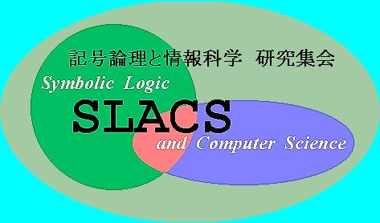

|  | ||
第２１回「記号論理学と情報科学」（SLACS2004） | ||
2004年９月９日（木）〜９月１０日（金） | ||
注意！会場が変更されました | ||
名古屋大学 多元数理科学研究科棟 509 号室 | |||||
場所の総合案内はhttp://www.nagoya-u.ac.jp/sogo/yellopage.html#higashiyama | |||||
具体的な地図は http://www.nagoya-u.ac.jp/sogo/higasiyama.html の21番の建物です | |||||
SLACS 2004 幹事 久馬栄道（愛知学院大学） お問い合わせ：kyuma@eido.jp | ||||||||